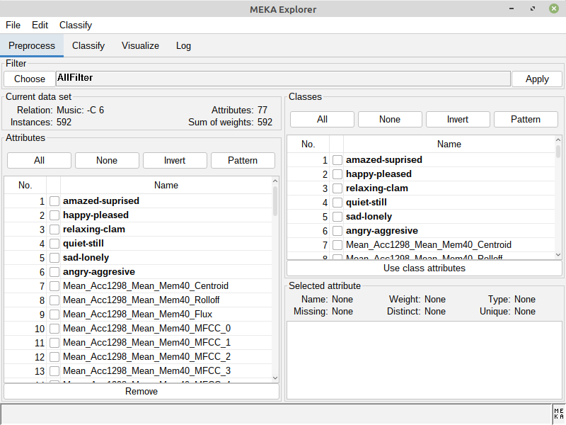
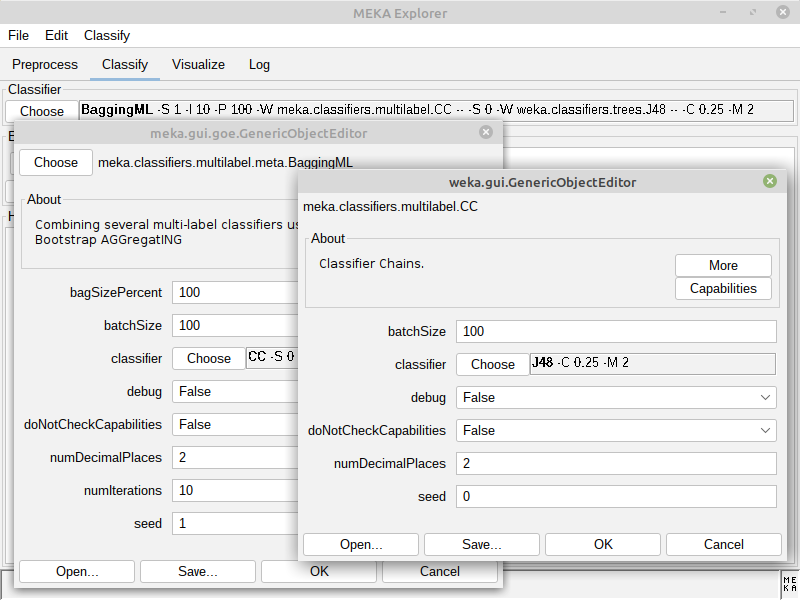
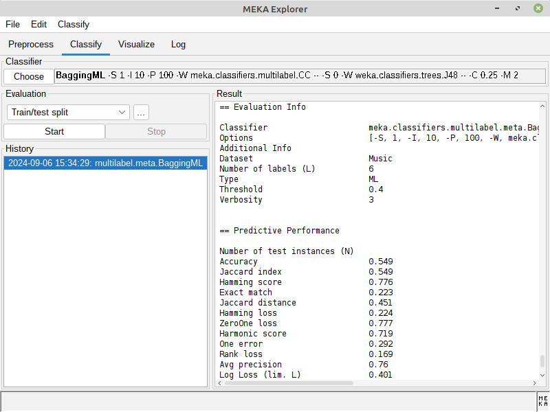
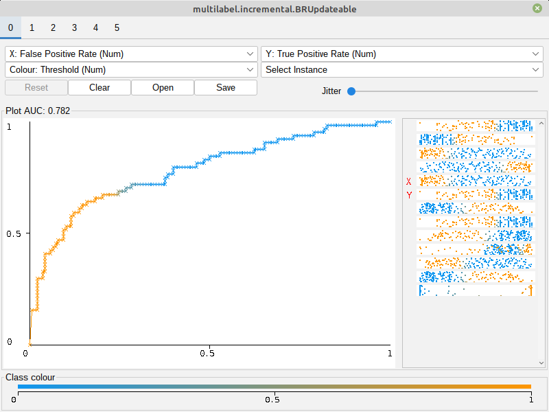

The MEKA project provides an open source implementation of methods for multi-label learning and evaluation. In multi-label classification, we want to predict multiple output variables for each input instance. This different from the 'standard' case (binary, or multi-class classification) which involves only a single target variable. MEKA is based on the WEKA Machine Learning Toolkit; it includes dozens of multi-label methods from the scientific literature, as well as a wrapper to the related MULAN framework.
An introduction to multi-label classification and MEKA is given in a JMLR MLOSS-track paper.
The main developers of MEKA:
- Jesse Read (Ecole Polytechnique, France)
- Peter Reutemann (University of Waikato, New Zealand)
- Joerg Wicker (University of Auckland, New Zealand)



